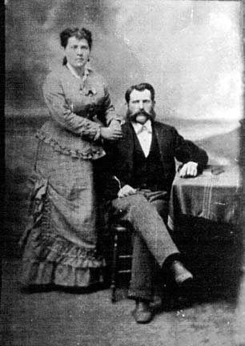

Here's a photograph I believe represents John RUDGE and Louisa nee Mitchell RUDGE. Kathryn Niven, a distant cousin of mine, was always told one of these two died shortly after they arrived in Wilmington, NC. I see a resemblance between the man represented here and his alleged son John William Rudge, but I could be mistaken.
Last updated on 26 Oct 1998